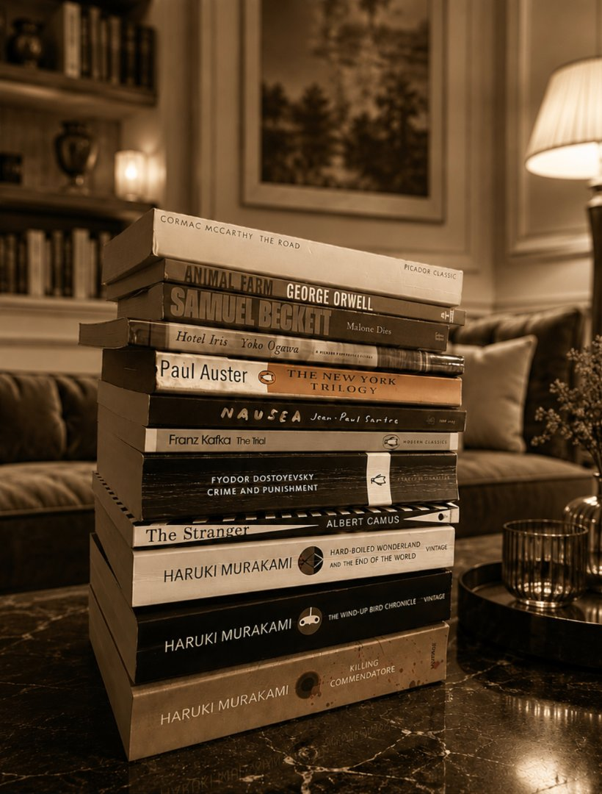

These are the books I keep within reach. Not a reading list so much as a set of permissions—each one proof that the strange, the unbearable, and the unresolved all belong on the page. I return to them the way other people return to certain rooms.
Inspiration

I.
Haruki Murakami
The Wind-Up Bird Chronicle
What I study here is the temperature of the sentences. The stranger the event, the more level the prose: a man climbs down a dry well and the syntax doesn't flinch, doesn't signal that anything unusual is happening. The uncanny gets admitted on the same flat register as boiling spaghetti or ironing a shirt—and that refusal to dramatize is what makes us believe it.
II.
Franz Kafka
The Trial
The horror is administrative. Kafka files a nightmare under correct procedure—forms, waiting rooms, officials who are only following the rules—and never once raises his voice about it. The prose stays patient, almost courteous, while the logic underneath comes apart. I keep returning to how much dread a calm, reasonable sentence can carry when it simply declines to admit that anything is wrong.
III.
Fyodor Dostoevsky
Crime and Punishment
Dostoevsky writes consciousness at a fever. The sentences crowd and double back, contradict themselves mid-thought, run on past where a calmer writer would stop—and the effect is a mind you seem to overhear rather than read. Nothing is summarized from a safe distance; you are pressed up against the thinking as it happens. I admire how disordered prose can be the most honest record of a disordered mind.
IV.
Albert Camus
The Stranger
Camus empties the sentence of feeling and lets the reader supply it. The famous flatness—short declaratives, events reported without comment, a narrator who notices the weather more than his own grief—isn't coldness; it's restraint loaded like a spring. Withholding the expected emotion makes the reader lean in to find it. I study the discipline it takes to leave that much unsaid.
V.
George Orwell
Animal Farm
Orwell taught me that clarity is a moral position. He wrote to be understood—plain words, concrete nouns, no fog of abstraction to hide behind—and treated a muddy sentence as a small dishonesty. The discipline isn't decoration; it's the refusal to let language do your thinking for you. I return to him whenever a paragraph starts sounding impressive instead of true.
VI.
Cormac McCarthy
The Road
The lesson is subtraction. Stripped of quotation marks and most of its punctuation, the prose moves like weather; the plainness isn't poverty but music, every “and” load-bearing. He's proof of how little a sentence needs before it stops reaching the chest.
VII.
Yōko Ogawa
Hotel Iris
What I take from Ogawa is restraint as pressure. She keeps the prose cool and exact even as it approaches the unbearable; nothing is sensationalized, the surface stays calm and almost domestic, and that quiet is precisely what makes the disquiet land. The dread lives in the gap between the gentle telling and the dark thing being told. I trust her never to tidy the mystery away.
VIII.
Paul Auster
The New York Trilogy
Auster builds a detective story and then refuses to solve it. Clues accumulate, identities slip, the investigation folds back on the investigator—and the book ends with the mystery deliberately open, the machinery left showing. What I take from him is the nerve to treat coincidence and dead ends as the structure itself rather than a failure of plotting. He proves a story can satisfy without resolving.
Beneath the fiction runs Carl Jung. The slow labor of individuation, the shadow we refuse to look at, the personas we wear in its place—these are the currents I keep writing toward. The novels I love best are the ones brave enough to descend, and to come back changed.
What I take from all of them is the same quiet lesson: tell the truth slant, trust the reader, and never tidy away what was never meant to be resolved.
The Newsletter
I'll email you almost never. When I do, it's a story.